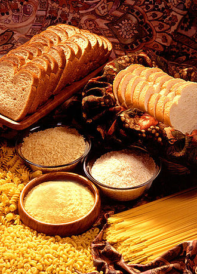

영양분 소개
이곳에서는 여러분의 건강을 발전시킬 수 있는 영양분을 소개합니다.
탄수화물(Carbohydrate)
당류의 유도체를 총칭하는 말입니다. 화학적으로는 탄소, 수소, 산소가 결합하여 이루어진 천연 고분자 화합물(natural high polymer)이자 유기화합물(organic compounds)을 이릅니다. 화학식은 Cm(H2O)n입니다.
음식에서 섭취하는 탄수화물은 단순당인 경우 3.87 kcal/g 의 에너지를, 복합 탄수화물의 경우 3.57~4.12 kcal/g 의 에너지를 생산하게 됩니다.
상대적으로 높은 양의 탄수화물은 과자, 쿠키, 사탕, 설탕, 벌꿀, 청량음료, 빵, 크래커, 잼, 과일 가공품, 파스타, 시리얼을 포함한 가공 식품이나 식물로 만든 정제 식품과 관련됩니다. 낮은 함량의 탄수화물은 콩, 괴경, 쌀, 과일과 같은 정제되지 않은 음식과 관련이 있습니다.
출처: [1], [2]